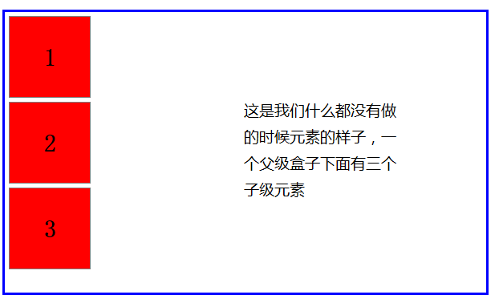

flex布局是我们学到的一种新的布局方式，他和display:block等属性一样，只不过不要与block那些属性混淆。这个就是单独的一个display:flex
首先我们想让元素成为弹性盒子，第一个要做的事就是开启弹性盒子属性，也就是在加上“display:flex”这个属性。加上这个属性的盒子就会让其下的子元素改变原先的排列位置，变成一种新的布局格式：


这个表现形式就是我们开启弹性布局以后的表现形式，这里有几点一定要知道和注意的地方：
- 当我们开启了弹性布局以后，会默认出现两条轴（如图所示），起始点和终止点有标注。
- 如果我们没有进行任何别的操作，那么主轴默认的方向就是X轴的方向。
- 副轴仅仅只是垂直于主轴，他们并没有明确的方向关系问题，就只是垂直而已。
- 他们的起始点和终止点就是我们父级盒子的边。
- 其下所有的子元素默认会在一行排列，不会换行，如果一行放不下的时候，会将盒子进行挤压，但是最小就只能挤压到子级盒子中内容的大小，不会在进行挤压，如果还是放不下的会就只能让子级盒子溢出父级盒子，但是绝对不会让子级盒子中的内容溢出子级盒子。
接下来我们就来说一下开启弹性布局以后我们都可以做一些什么。
一、可以改变主轴的方向
我们可以改变主轴的方向，因为副轴永远是垂直于主轴的，所以我们只要改变了主轴方向就等于是改变了副轴的方向，在这里我们用flex-direction这个属性来改变主轴的方向。
{
flex-direction: row;
flex-direction: column; flex-direction: row-reverse;
flex-direction: column-reverse;
}
row //-> 是默认的格式，就是我们一开始的开启弹性盒子的时候的默认格式。

column//-> 把主轴方向改变成从左上角开始垂直向下。

row-reverse //-> 将主轴翻转，把之前主轴结束位变成开始为，之前的开始位变为结束位。

column-reverse //-> 在主轴方向变成垂直向下以后，把之前主轴结束位变成开始为，之前的开始位变为结束位。

这个就是我们改变主轴方向的操作，这里要注意的是，不管主轴怎么改变方向，我们在接下来说道的方法中，该是操作主轴的还是操作主轴的，只是我们要看清主轴到底是冲向哪个方向。
接下来的笔记全部是以主轴默认的方向演示（其他方向道理一样，可以自己尝试一下）
二、改变默认的一行排列
因为我们的弹性布局默认是会进行一行排列的，在这里我们通过flex-wrap属性开启可以换行的操作。
{
flex-wrap: nowrap;
flex-wrap: wrap;
}
flex-wrap: nowrap; //-> 是默认值，元素不可以换行，如果放不下了就会讲子级盒子压缩，最小压缩到子盒子中内容的大小

flex-wrap: wrap; //-> 开启换行，让元素在一行显示不下的时候换行

这个就是换行属性的表现形式，但是这个换行以后会出现一些小问题，也是需要我们注意的。这些小问题因为是和后面我们讲到的一些属性有关系，所以我们把问题在下面的属性中提到。
三、我们可以改变所有元素在主轴上的排布方式
我们使用的是justify-content属性，这个属性是让其下的子级盒子在主轴的方向上的排列方式（共有五种方式）。
{
justify-content: flex-start;
justify-content: flex-end;
justify-content: center;
justify-content: space-between;
justify-content: space-around;
}
flex-start //-> 让所有元素以主轴起始点对齐

flex-end //-> 让所有元素以主轴终止点对齐

center //-> 让所有元素以主轴中间点对齐

space-between //-> 让元素以两侧顶格，中间每个元素与每个元素之间的间距相同的方式对齐

space-around //-> 让元素以环绕的方式进行对齐（每一个元素两侧的留白全部一样）

这就是主轴方向排列的几种表现形式。
四、我们可以改变元素在副轴上的排布方式
在这里要注意的一点就是，我们改变元素在副轴上的排布方式的时候，是分成两种情况来设置的，一种是副轴排布上只有一行，第二种就是换行开启后，副轴上出现多行的情况。
这里说一个小技巧：我们在进行flex布局的时候，先设置主轴方向的排布方式，然后我们可以把已经设置好主轴排布方式的那一排元素当成一个整体来看（这个说法也只是帮助我们理解而已） ，这样我们就好理解的多了。在允许换行后，并且没有设置align-content属性之前我们也可以把每一排元素都当成一个个的整体元素来看就可以了（这个必须牢记。这里一定要注意这种状态是允许换行后，并且没有设置align-content属性之前才会出现的。牢记，牢记，牢记！！！ ）

这个图只是帮助我们记忆而已，当然，一定要注意，这只是一个默认状态，当我们允许换行后，并且设置了align-content属性之后，这个状态就会消失了，会变成另外一种状态。（另外一种状态一会我们再介绍）
现在，我们先来说一下只有一行的时候，我们使用align-items这个属性设置的元素在副轴上的排布方式。（这里我们默认的主轴排布方式是justify-content: space-between;）
{
align-items: flex-start;
align-items: flex-end;
align-items: center;
align-items: stretch;
}
align-items: flex-start; //-> 把我们刚才当成一个整体看的那个元素放在副轴的起始点

align-items: flex-end; //-> 把我们刚才当成一个整体看的那个元素放在副轴的终止点

align-items: center; //-> 把我们刚才当成一个整体看的那个元素放在副轴的中间位置

align-items: stretch; //-> 把我们刚才当成一个整体看的那个元素拉伸成与副轴一样长度的元素（这个设置只有在子元素没有设置与副轴对应的元素值的情况下才可以生效，不然没有效果。比如现在副轴是垂直向下的，如果我们没有设置元素的高，那么我们的元素的高就会变成副轴的长度，也就是拉伸至上下顶格。如果我们通过改变主轴方向而使得副轴方向水平向右时，我们如果不设置元素的宽，那么宽度就会变成副轴的长度，也就是拉伸至左右顶格。如果我们给元素的宽和高都设置了值的话，那么这个属性讲不会再生效。）

这就是我们的元素在副轴上的排布方式，不过这个只是单行的操作，我们只要把这一行元素当成一个整体来看就好了。
接下来我们说一下多行的情况。刚才我们看到过了，多行的时候会出现“两条主轴”，这个时候我们对主轴和副轴的操作都是两行或者多行都参照这一个规则，并且在自己的当前行，按照这个规则进行移动。（这里我们justify-content: space-between; 排布）
语法和表现形式都和单行的时候一样，只不过只是在自己当前行，所以就不一一写出来了，只看一个align-items: center 的表现形式就好了。

我们设置的主轴方向排布justify-content: space-between; 是每一行元素都会在当前行的主轴上按照这个方式进行排布。
我们设置的副轴方向排布align-items: center; 是每一行元素都会在当前的副轴上按照这个方式进行排布。
这个就是多行时的默认状态下的操作，如果我们允许换行以后，并且设置了align-content这个属性以后，这个默认的排布方式就被抵消掉了，就会按照一种新的方式进行排布。（接下来我们还以两行为例，并且主轴的排布方式还是justify-content: space-between;）
主轴和副轴都会回归到只有一条的状态，并且align-items属性不会再生效。
{
align-content: flex-start;
align-content: flex-end;
align-content: center;
align-content: space-between;
align-content: space-around;
}
align-content: flex-start; //-> 把多行元素按照副轴起始点开始顺序排列

align-content: flex-end; //-> 把多行元素按照副轴终止点结束顺序排列

align-content: center; //-> 把多行元素集中在副轴中间点的位置

align-content: space-between; //-> 把多行元素按照副轴两边顶格，中间间隔一样的方式排列

align-content: space-around; //-> 把多行元素按照副轴方向环绕的方式进行排列

这个时候我们可以发现，这个多行的副轴方向排布就和主轴方向排布的表现形式是一模一样的。我们要注意的就是，一旦开启了align-content属性以后，align-items就无效了，就不能在进行单行操作了。
这里写的主轴和副轴排布都是绝对的主轴和副轴排布方式，不管主轴和副轴怎么变换，操作主轴的属性始终是操作主轴的。副轴的也一样。
五、我们可以改变子元素在自己当前列上的单独操作
这里我们使用align-self属性来操作，是让每一个子元素在自己当前列上的排布方式。（这个属性是设置给子元素的）
在开启弹性盒子以后，每一个子元素都会有自己的当前列。（我们设置主轴的排布方式是justify-content: space-between;）

这里我们用绿色框框起来的就是每个元素自己的当前列，当前列的方向与副轴方向一致（如果副轴方向变成了从左向右，那么当前列就变成了当前行）当前列的长度就是当前副轴的长度，当前列的方向就是副轴的方向。
这时我们的元素就可以通过align-self属性来改变自己在当前列上面的位置。
{
align-self: flex-start; //-> 让元素在自己的当前列处于开始位
align-self: flex-end; //-> 让元素在自己的当前列处于结束位
align-self: center; //-> 让元素在自己的当前列处于中间位
align-self: stretch; //-> 让元素在自己的当前列处于拉伸状态（在不设置宽高的时候才有效，如果设置了宽高就没有效果了）
}
这个没有什么特殊的效果我们就用一张图来演示了。

拉伸我们就不做演示了，就是在不设置高（宽）的时候在副轴方向上拉伸至两边顶格。
刚才看到了一行情况下的元素在当前列的操作，换行以后在设置align-content之前，我们也可以设置当前列的单独操作，但是设置了align-content之后就不可以在进行当前列单独操作了。

这个一定是在允许换行后，在设置align-content之前。我们可以设置每一个子元素在当前列上的位置。
而我们设置了align-content之以后我们的主轴和副轴就会变回只有一条的状态了，这个时候就不允许在进行当前列操作了。